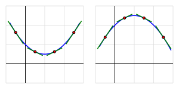

How does the derivative of a function tell us whether the function is increasing or decreasing on an interval?
What can we learn by taking the derivative of the derivative (the second derivative) of a function \(f\text{?}\)
What does it mean to say that a function is concave up or concave down? How are these characteristics connected to certain properties of the derivative of the function?
What are the units of the second derivative? How do they help us understand the rate of change of the rate of change?
Given a differentiable function \(y= f(x)\text{,}\) we know that its derivative, \(y = f'(x)\text{,}\) is a related function whose output at \(x=a\) tells us the slope of the tangent line to \(y = f(x)\) at the point \((a,f(a))\text{.}\) That is, heights on the derivative graph tell us the values of slopes on the original function’s graph.
At a point where \(f'(x)\) is positive, the slope of the tangent line to \(f\) is positive. Therefore, on an interval where \(f'(x)\) is positive, the function \(f\) is increasing (or rising). Similarly, if \(f'(x)\) is negative on an interval, the graph of \(f\) is decreasing (or falling).
The derivative of \(f\) tells us not only whether the function \(f\) is increasing or decreasing on an interval, but also how the function \(f\) is increasing or decreasing. Look at the two tangent lines shown in Figure 2.4.1. We see that near point \(A\) the value of \(f'(x)\) is positive and relatively close to zero, and near that point the graph is rising slowly. By contrast, near point \(B\text{,}\) the derivative is negative and relatively large in absolute value, and \(f\) is decreasing rapidly near \(B\text{.}\)
Figure2.4.1.Two tangent lines on a graph.
Besides asking whether the value of the derivative function is positive or negative and whether it is large or small, we can also ask “how is the derivative changing?”
Because the derivative, \(y = f'(x)\text{,}\) is itself a function, we can consider taking its derivative — the derivative of the derivative — and ask “what does the derivative of the derivative tell us about how the original function behaves?” We start with an investigation of a moving object.
Warm-Up2.4.1.
The position of a car driving along a straight road at time \(t\) in minutes is given by the function \(y = s(t)\) that is pictured in Figure 2.4.2. The car’s position function has units measured in thousands of feet. For instance, the point \((2,4)\) on the graph indicates that after 2 minutes, the car has traveled 4000 feet.
Figure2.4.2.The graph of \(y = s(t)\text{,}\) the position of the car (measured in thousands of feet from its starting location) at time \(t\) in minutes.
In everyday language, describe the behavior of the car over the provided time interval. In particular, you should carefully discuss what is happening on each of the time intervals \([0,1]\text{,}\)\([1,2]\text{,}\)\([2,3]\text{,}\)\([3,4]\text{,}\) and \([4,5]\text{,}\) plus provide commentary overall on what the car is doing on the interval \([0,12]\text{.}\)
On the lefthand axes provided in Figure 2.4.3, sketch a careful, accurate graph of \(y = s'(t)\text{.}\)
What is the meaning of the function \(y = s'(t)\) in the context of the given problem? What can we say about the car’s behavior when \(s'(t)\) is positive? when \(s'(t)\) is zero? when \(s'(t)\) is negative?
Rename the function you graphed in (b) to be called \(y = v(t)\text{.}\) Describe the behavior of \(v\) in words, using phrases like “\(v\) is increasing on the interval \(\ldots\)” and “\(v\) is constant on the interval \(\ldots\text{.}\)”
Sketch a graph of the function \(y = v'(t)\) on the righthand axes provide in Figure 2.4.3. Write at least one sentence to explain how the behavior of \(v'(t)\) is connected to the graph of \(y=v(t)\text{.}\)
Figure2.4.3.Axes for plotting \(y = v(t) = s'(t)\) and \(y = v'(t)\text{.}\)
Subsection2.4.1Increasing or decreasing
So far, we have used the words increasing and decreasing intuitively to describe a function’s graph. Here we define these terms more formally.
Definition2.4.4.
Given a function \(f(x)\) defined on the interval \((a,b)\text{,}\) we say that \(f\) is increasing on \((a,b)\) provided that for all \(x\text{,}\)\(y\) in the interval \((a,b)\text{,}\) if \(x \lt y\text{,}\) then \(f(x) \lt f(y)\text{.}\) Similarly, we say that \(f\) is decreasing on \((a,b)\) provided that for all \(x\text{,}\)\(y\) in the interval \((a,b)\text{,}\) if \(x \lt y\text{,}\) then \(f(x) \gt f(y)\text{.}\)
Simply put, an increasing function is one that is rising as we move from left to right along the graph, and a decreasing function is one that falls as the value of the input increases. If the function has a derivative, the sign of the derivative tells us whether the function is increasing or decreasing.
Let \(f\) be a function that is differentiable on an interval \((a,b)\text{.}\) It is possible to show that that if \(f'(x) > 0\) for every \(x\) such that \(a \lt x \lt b\text{,}\) then \(f\) is increasing on \((a,b)\text{;}\) similarly, if \(f'(x) \lt 0\) on \((a,b)\text{,}\) then \(f\) is decreasing on \((a,b)\text{.}\)
For example, the function pictured in Figure 2.4.5 is increasing on the entire interval \(-2 \lt x \lt 0\text{,}\) and decreasing on the interval \(0 \lt x \lt 2\text{.}\) Note that the value \(x = 0\) is not included in either interval since at this location, the function is changing from increasing to decreasing.
Figure2.4.5.A function that is decreasing on the intervals \(-3 \lt x \lt -2\) and \(0 \lt x \lt 2\) and increasing on \(-2 \lt x \lt 0\) and \(2 \lt x \lt 3\text{.}\)
Subsection2.4.2The Second Derivative
We are now accustomed to investigating the behavior of a function by examining its derivative. The derivative of a function \(f\) is a new function given by the rule
Because \(f'\) is itself a function, it is perfectly feasible for us to consider the derivative of the derivative, which is the new function \(y = [f'(x)]'\text{.}\) We call this resulting function the second derivative of \(y = f(x)\text{,}\) and denote the second derivative by \(y = f''(x)\text{.}\) Consequently, we will sometimes call \(f'\) “the first derivative” of \(f\text{,}\) rather than simply “the derivative” of \(f\text{.}\)
Definition2.4.6.
The second derivative is defined by the limit definition of the derivative of the first derivative. That is,
The meaning of the derivative function still holds, so when we compute \(y = f''(x)\text{,}\) this new function measures slopes of tangent lines to the curve \(y = f'(x)\text{,}\) as well as the instantaneous rate of change of \(y = f'(x)\text{.}\) In other words, just as the first derivative measures the rate at which the original function changes, the second derivative measures the rate at which the first derivative changes. The second derivative will help us understand how the rate of change of the original function is itself changing.
Subsection2.4.3Concavity
In addition to asking whether a function is increasing or decreasing, it is also natural to inquire how a function is increasing or decreasing. There are three basic behaviors that an increasing function can demonstrate on an interval, as pictured in Figure 2.4.7: the function can increase more and more rapidly, it can increase at the same rate, or it can increase in a way that is slowing down. Fundamentally, we are beginning to think about how a particular curve bends, with the natural comparison being made to lines, which don’t bend at all. More than this, we want to understand how the bend in a function’s graph is tied to behavior characterized by the first derivative of the function.
Figure2.4.7.Three functions that are all increasing, but doing so at an increasing rate, at a constant rate, and at a decreasing rate, respectively.
On the leftmost curve in Figure 2.4.7, draw a sequence of tangent lines to the curve. As we move from left to right, the slopes of those tangent lines will increase. Therefore, the rate of change of the pictured function is increasing, and this explains why we say this function is increasing at an increasing rate. For the rightmost graph in Figure 2.4.7, observe that as \(x\) increases, the function increases, but the slopes of the tangent lines decrease. This function is increasing at a decreasing rate.
Similar options hold for how a function can decrease. Here we must be extra careful with our language, because decreasing functions involve negative slopes. Negative numbers present an interesting tension between common language and mathematical language. For example, it can be tempting to say that “\(-100\) is bigger than \(-2\text{.}\)” But we must remember that “greater than” describes how numbers lie on a number line: \(x \gt y\) provided that \(x\) lies to the right of \(y\text{.}\) So of course, \(-100\) is less than \(-2\text{.}\) Informally, it might be helpful to say that “\(-100\) is more negative than \(-2\text{.}\)” When a function’s values are negative, and those values get more negative as the input increases, the function must be decreasing.
Figure2.4.8.From left to right, three functions that are all decreasing, but doing so in different ways.
Now consider the three graphs shown in Figure 2.4.8. Clearly the middle graph depicts a function decreasing at a constant rate. Now, on the first curve, draw a sequence of tangent lines. We see that the slopes of these lines get less and less negative as we move from left to right. That means that the values of the first derivative, while all negative, are increasing, and thus we say that the leftmost curve is decreasing at an increasing rate.
This leaves only the rightmost curve in Figure 2.4.8 to consider. For that function, the slopes of the tangent lines are negative throughout the pictured interval, but as we move from left to right, the slopes get more and more negative. Hence the slope of the curve is decreasing, and we say that the function is decreasing at a decreasing rate.
We now introduce the notion of concavity which provides simpler language to describe these behaviors. When a curve opens upward on a given interval, like the parabola \(y = x^2\) or the exponential growth function \(y = e^x\text{,}\) we say that the curve is concave up on that interval. Likewise, when a curve opens down, like the parabola \(y = -x^2\) or the opposite of the exponential function \(y = -e^{x}\text{,}\) we say that the function is concave down. Concavity is linked to both the first and second derivatives of the function.
In Figure 2.4.9, we see two functions and a sequence of tangent lines to each. On the lefthand plot, where the function is concave up, observe that the tangent lines always lie below the curve itself, and the slopes of the tangent lines are increasing as we move from left to right. In other words, the function \(f\) is concave up on the interval shown because its derivative, \(f'\text{,}\) is increasing on that interval. Similarly, on the righthand plot in Figure 2.4.9, where the function shown is concave down, we see that the tangent lines alway lie above the curve, and the slopes of the tangent lines are decreasing as we move from left to right. The fact that its derivative, \(f'\text{,}\) is decreasing makes \(f\) concave down on the interval.

Figure2.4.9.At left, a function that is concave up; at right, one that is concave down.
We state these most recent observations formally as the definitions of the terms concave up and concave down.
Definition2.4.10.
Let \(f\) be a differentiable function on an interval \((a,b)\text{.}\) Then \(f\) is concave up on \((a,b)\) if and only if \(f'\) is increasing on \((a,b)\text{;}\)\(f\) is concave down on \((a,b)\) if and only if \(f'\) is decreasing on \((a,b)\text{.}\)
Activity2.4.2.
The position of a car driving along a straight road at time \(t\) in minutes is given by the function \(y = s(t)\) that is pictured in Figure 2.4.11. The car’s position function has units measured in thousands of feet. Remember that you worked with this function and sketched graphs of \(y = v(t) = s'(t)\) and \(y = v'(t)\) in Warm-Up 2.4.1.
Figure2.4.11.The graph of \(y = s(t)\text{,}\) the position of the car (measured in thousands of feet from its starting location) at time \(t\) in minutes.
On what intervals is the position function \(y = s(t)\) increasing? decreasing? Why?
On which intervals is the velocity function \(y = v(t) = s'(t)\) increasing? decreasing? neither? Why?
Acceleration is defined to be the instantaneous rate of change of velocity, as the acceleration of an object measures the rate at which the velocity of the object is changing. Say that the car’s acceleration function is named \(a(t)\text{.}\) How is \(a(t)\) computed from \(v(t)\text{?}\) How is \(a(t)\) computed from \(s(t)\text{?}\) Explain.
What can you say about \(s''\) whenever \(s'\) is increasing? Why?
Using only the words increasing, decreasing, constant, concave up, concave down, and linear, complete the following sentences. For the position function \(s\) with velocity \(v\) and acceleration \(a\text{,}\)
on an interval where \(v\) is positive, \(s\) is .
on an interval where \(v\) is negative, \(s\) is .
on an interval where \(v\) is zero, \(s\) is .
on an interval where \(a\) is positive, \(v\) is .
on an interval where \(a\) is negative, \(v\) is .
on an interval where \(a\) is zero, \(v\) is .
on an interval where \(a\) is positive, \(s\) is .
on an interval where \(a\) is negative, \(s\) is .
on an interval where \(a\) is zero, \(s\) is .
Exploring the context of position, velocity, and acceleration is an excellent way to understand how a function, its first derivative, and its second derivative are related to one another. In Activity 2.4.2, we can replace \(s\text{,}\)\(v\text{,}\) and \(a\) with an arbitrary function \(f\) and its derivatives \(f'\) and \(f''\text{,}\) and essentially all the same observations hold. In particular, note that the following implications hold: \(f''\) being positive on an interval implies \(f'\) is increasing on the interval implies \(f\) is concave up on the interval. Likewise, \(f''\) being negative on an interval implies \(f'\) is decreasing on the interval implies \(f\) is concave down on the interval.
Activity2.4.3.
A potato is placed in an oven, and the potato’s temperature \(F\) (in degrees Fahrenheit) at various points in time is taken and recorded in the following table. Time \(t\) is measured in minutes.
Table2.4.12.Select values of \(F(t)\text{.}\)
\(t\)
\(F(t)\)
\(0\)
\(70\)
\(15\)
\(180.5\)
\(30\)
\(251\)
\(45\)
\(296\)
\(60\)
\(324.5\)
\(75\)
\(342.8\)
\(90\)
\(354.5\)
Though it’s not possible to say for sure, do you think that \(F'(30) \gt 0\) or \(F'(30) \lt 0\text{?}\) Explain your reasoning.
Though it’s not possible to say for sure, do you think that \(F''(30) \gt 0\) or \(F''(30) \lt 0\text{?}\) Explain your reasoning.
Activity2.4.4.
This activity builds on our experience and understanding of how to sketch the graph of \(f'\) given the graph of \(f\text{.}\)
In Figure 2.4.13, given the respective graphs of two different functions \(f\text{,}\) sketch the corresponding graph of \(f'\) on the first axes below, and then sketch \(f''\) on the second set of axes. In addition, for each, write several careful sentences in the spirit of those in Activity 2.4.2 that connect the behaviors of \(f\text{,}\)\(f'\text{,}\) and \(f''\text{.}\) For instance, write something such as
\(f'\) is on the interval , which is connected to the fact that \(f\) is on the same interval , and \(f''\) is on the interval.
but of course with the blanks filled in. The scale of the vertical axis for the graph of \(f'\) does not need to be accurate.
Figure2.4.13.Two given functions \(f\text{,}\) with axes provided for plotting \(f'\) and \(f''\) below.
Subsection2.4.4Summary
Question2.4.14.
How does the derivative of a function tell us whether the function is increasing or decreasing on an interval?
Answer.
A differentiable function \(f\) is increasing on an interval whenever its first derivative is positive, and decreasing whenever its first derivative is negative.
Question2.4.15.
What can we learn by taking the derivative of the derivative (the second derivative) of a function \(f\text{?}\)
Answer.
By taking the derivative of the derivative of a function \(f\text{,}\) we arrive at the second derivative, \(f''\text{.}\) The second derivative measures the instantaneous rate of change of the first derivative. The sign of the second derivative tells us whether the slope of the tangent line to \(f\) is increasing or decreasing.
Question2.4.16.
What does it mean to say that a function is concave up or concave down? How are these characteristics connected to certain properties of the derivative of the function?
Answer.
A differentiable function is concave up whenever its first derivative is increasing (which is true when its second derivative is positive), and concave down whenever its first derivative is decreasing (which is true when its second derivative is negative). Examples of functions that are everywhere concave up are \(y = x^2\) and \(y = e^x\text{;}\) examples of functions that are everywhere concave down are \(y = -x^2\) and \(y = -e^x\text{.}\)
Question2.4.17.
What are the units of the second derivative? How do they help us understand the rate of change of the rate of change?
Answer.
The units on the second derivative are “units of output per unit of input per unit of input.” They tell us how the value of the derivative function is changing in response to changes in the input. In other words, the second derivative tells us the rate of change of the rate of change of the original function.
Exercises2.4.5Exercises
1.
Suppose that \(y = f(x)\) is a twice-differentiable function such that \(f''\) is continuous for which the following information is known: \(f(2) = -3\text{,}\)\(f'(2) = 1.5\text{,}\)\(f''(2) = -0.25\text{.}\)
Is \(f\) increasing or decreasing near \(x = 2\text{?}\) Is \(f\) concave up or concave down near \(x = 2\text{?}\)
Do you expect \(f(2.1)\) to be greater than \(-3\text{,}\) equal to \(-3\text{,}\) or less than \(-3\text{?}\) Why?
Do you expect \(f'(2.1)\) to be greater than \(1.5\text{,}\) equal to \(1.5\text{,}\) or less than \(1.5\text{?}\) Why?
Sketch a graph of \(y = f(x)\) near \((2,f(2))\) and include a graph of the tangent line.
2.
For a certain function \(y = g(x)\text{,}\) its derivative is given by the function pictured in Figure 2.4.18.
Figure2.4.18.The graph of \(y = g'(x)\text{.}\)
What is the approximate slope of the tangent line to \(y = g(x)\) at the point \((2,g(2))\text{?}\)
How many real number solutions can there be to the equation \(g(x) = 0\text{?}\) Justify your conclusion fully and carefully by explaining what you know about how the graph of \(g\) must behave based on the given graph of \(g'\text{.}\)
On the interval \(-3 \lt x \lt 3\text{,}\) how many times does the concavity of \(g\) change? Why?
Use the provided graph to estimate the value of \(g''(2)\text{.}\)
3.
For each prompt that follows, sketch a possible graph of a function on the interval \(-3 \lt x \lt 3\) that satisfies the stated properties.
\(y = f(x)\) such that \(f\) is increasing on \(-3 \lt x \lt 3\text{,}\) concave up on \(-3 \lt x \lt 0\text{,}\) and concave down on \(0 \lt x \lt 3\text{.}\)
\(y = g(x)\) such that \(g\) is increasing on \(-3 \lt x \lt 3\text{,}\) concave down on \(-3 \lt x \lt 0\text{,}\) and concave up on \(0 \lt x \lt 3\text{.}\)
\(y = h(x)\) such that \(h\) is decreasing on \(-3 \lt x \lt 3\text{,}\) concave up on \(-3 \lt x \lt -1\text{,}\) neither concave up nor concave down on \(-1 \lt x \lt 1\text{,}\) and concave down on \(1 \lt x \lt 3\text{.}\)
\(y = p(x)\) such that \(p\) is decreasing and concave down on \(-3 \lt x \lt 0\) and is increasing and concave down on \(0 \lt x \lt 3\text{.}\)